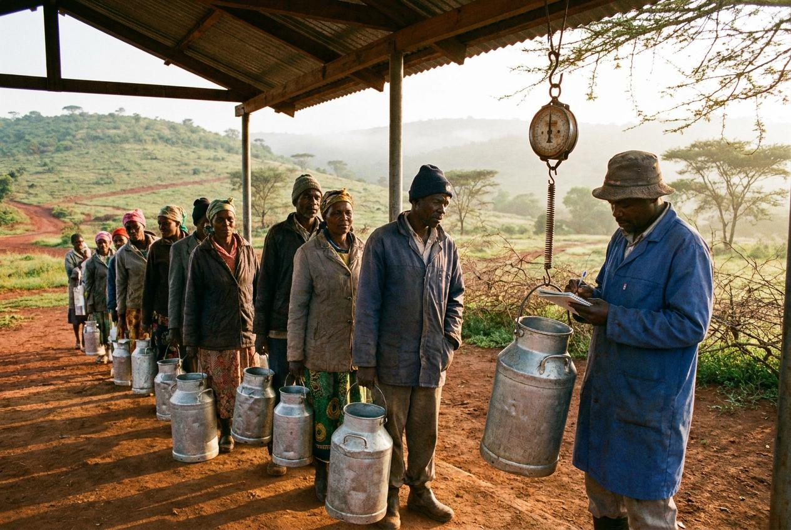

Milk collected twice a day, paid once a month
Ereteti Dairy Sacco has collected milk on the Ngong road since 1998. Around eight hundred farmers deliver to us twice a day, and we pay for every accepted litre once a month.
Any farmer on one of our three routes may join. You need a national ID and a bank account, and you may deliver from the day your membership number is issued.
Where we collect
